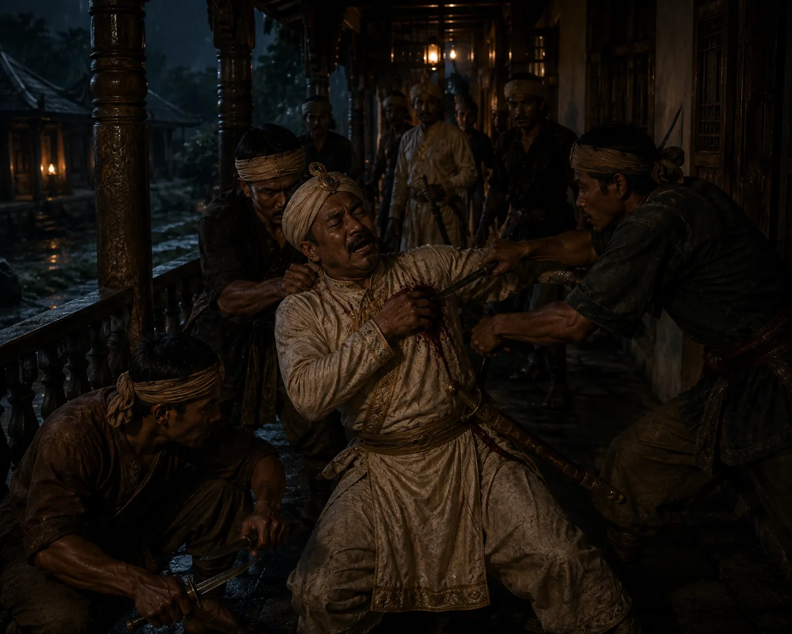

Assassination of Traitor Badan Chandra Borphukan
August 1817 · The days of the Burmese

Subedar Rup Singh strikes down Badan Chandra Borphukan with a dao while bathing in Jorhat, executing retribution for bringing Burmese invaders.
Sources have not yet been catalogued for this record.
People: Badan Chandra Borphukan, Chandrakanta Singha (Sudingphaa), Numali Rajmao, Subedar Rup Singh
Open this scene in the interactive archive · Follow this event on MAP